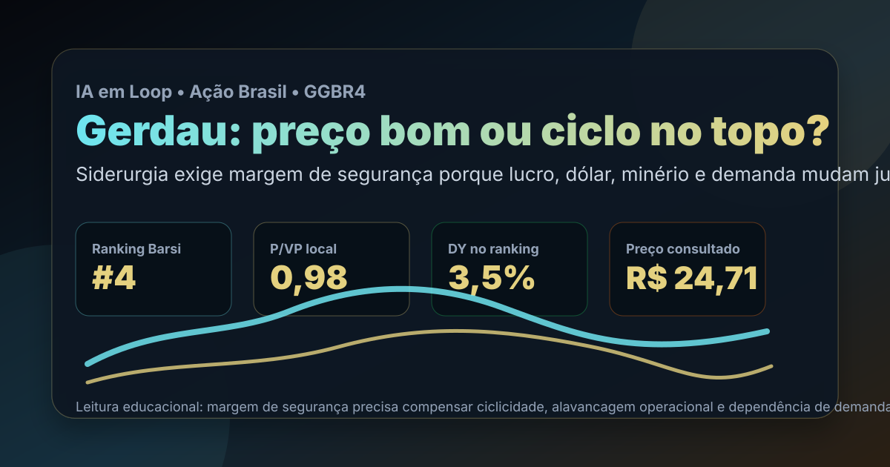

17/08: GGBR4, Gerdau e o teste do aço cíclico
GGBR4 entrou como um dos nomes mais fortes do ranking Barsi de agosto: P/VP perto de 1, dividend yield positivo e décadas de histórico. A pergunta central é simples: o desconto compensa a ciclicidade do aço ou o preço já reflete um momento bom demais?

Siderurgia pode parecer barata nos múltiplos justamente quando o lucro está em ponto favorável; por isso a análise precisa separar qualidade industrial de lucro cíclico.
Resposta curta: ativo bom, mas não é uma tese de piloto automático
No ranking Barsi de agosto do IA em Loop, GGBR4 aparece em 4º lugar, com preço de R$ 26,31 na base local, valor de mercado de R$ 51,7 bilhões, dividend yield de 3,5%, P/VP de 0,98, P/L de 22,88, 27 anos com dividendos e score 60,6. A consulta pública de mercado em 17/08/2026 mostrou cotação perto de R$ 24,71, com faixa de um ano entre R$ 15,98 e R$ 26,31.
A leitura prática é: Gerdau tem histórico, escala e disciplina de capital, mas o investidor não pode tratar múltiplo baixo como sinônimo de margem de segurança automática. O negócio depende de demanda por aço, construção, infraestrutura, indústria, preço de insumos, câmbio e competição internacional. Se a margem normalizada for menor que a margem recente, o P/L aparente fica menos confortável.
O que os dados verificados mostram
Nos arquivos locais do IA em Loop, GGBR4 aparece como Gerdau no setor de materiais básicos, segmento de aço, classificada como negócio perene no filtro Barsi. O papel passou nos critérios estritos do ranking de agosto, ficando atrás apenas de SANB11, ENGI3 e KLBN4 entre os nomes aprovados.
A página pública de relações com investidores da Gerdau estava acessível na consulta de 17/08/2026, incluindo a central de resultados. A consulta de preço público no mesmo dia colocou GGBR4 abaixo da máxima de um ano, mas ainda muito acima da mínima anual. Isso é relevante: a ação não parece esticada no topo exato, porém também não está em patamar de estresse profundo.
| Métrica verificada | Fonte/período | Valor | Leitura |
|---|---|---|---|
| Posição no ranking | Barsi IA em Loop 2026-08 | #4 | bom encaixe em perenidade, dividendos e valuation |
| P/VP | Barsi IA em Loop 2026-08 | 0,98 | mercado pagando perto do valor patrimonial |
| Dividend yield | Barsi IA em Loop 2026-08 | 3,5% | renda positiva, mas não é o centro da tese |
| Histórico de dividendos | Barsi IA em Loop 2026-08 | 27 anos | sinal de cultura de remuneração ao acionista |
| Preço público | Consulta de mercado 17/08/2026 | R$ 24,71 | próximo da parte alta da faixa anual |
Por que GGBR4 importa agora
Gerdau não é uma pequena tese de crescimento escondida. É uma companhia industrial grande, com presença em aço longo, operação internacional e exposição direta ao ciclo econômico. Isso torna a análise útil para o investidor que quer entender quando uma empresa sólida pode parecer barata por causa do setor — e quando o setor pode estar escondendo risco de queda de margem.
O ponto favorável é a combinação de escala, histórico e valuation sem prêmio exagerado. O ponto sensível é a natureza cíclica. Em aço, demanda e preço podem virar rápido: construção desacelera, indústria reduz estoques, importado pressiona, minério e sucata mudam de preço e a margem que parecia normal pode ser só uma fase boa do ciclo.
GGBR4 merece estudo porque junta ranking forte, P/VP abaixo de 1 e histórico de dividendos. Mas a entrada só faria sentido com margem de segurança contra lucro cíclico: o investidor precisa estimar a capacidade de caixa em cenário normal, não apenas olhar o lucro corrente.
O que favorece e o que ameaça a tese
Favoráveis
• Empresa grande, conhecida e com histórico longo no setor de aço.
• Presença no topo do ranking Barsi de agosto.
• P/VP perto de 1, sem prêmio patrimonial evidente.
• Histórico amplo de pagamentos aos acionistas.
• Possível benefício em ciclos de infraestrutura e indústria.
Desfavoráveis
• Lucro de siderurgia é cíclico e pode cair rápido.
• A cotação está próxima da parte alta da faixa de um ano.
• Demanda por aço depende de construção, indústria e investimento.
• Competição externa e câmbio podem apertar margens.
• Dividend yield atual não compensa sozinho um erro de ciclo.
Checklist para acompanhar daqui em diante
- Margem normalizada: comparar lucro atual com média de ciclo, não só com o último trimestre.
- Geração de caixa: checar se o caixa operacional cobre investimento, dívida e dividendos sem pressão excessiva.
- Demanda por aço: observar construção, infraestrutura, indústria e estoques.
- Preço de insumos: minério, sucata, energia e frete mudam rapidamente a margem.
- Valuation relativo: exigir desconto maior quando a ação estiver perto da máxima anual.
Conclusão
A resposta para a pergunta do post é: GGBR4 parece uma boa empresa cíclica em preço razoável, não uma barganha óbvia. O ranking Barsi aponta mérito: histórico, dividendos, valuation patrimonial e setor relevante. O risco é comprar um lucro de pico como se fosse lucro permanente.
Na régua do IA em Loop, Gerdau entra como watchlist de qualidade cíclica: vale acompanhar, comparar com resultados e exigir preço que proteja contra uma virada do aço. Se a companhia mantiver caixa e disciplina em um ciclo mais fraco, o caso melhora; se a margem atual for exceção, o múltiplo pode enganar.